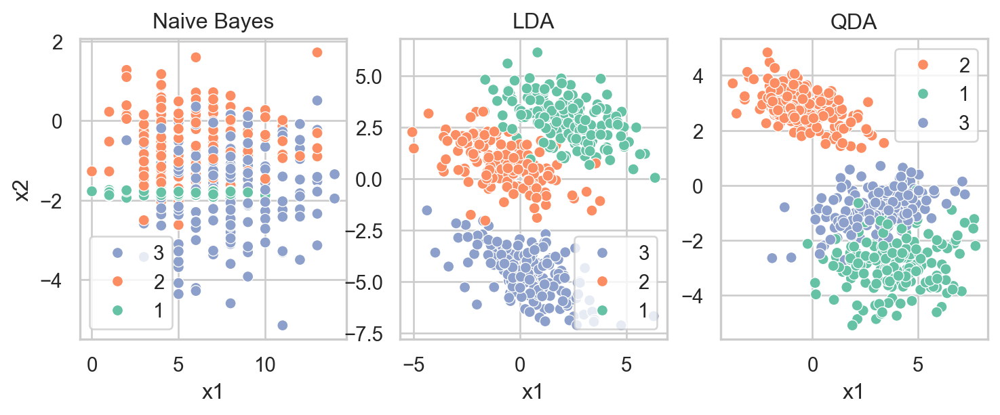
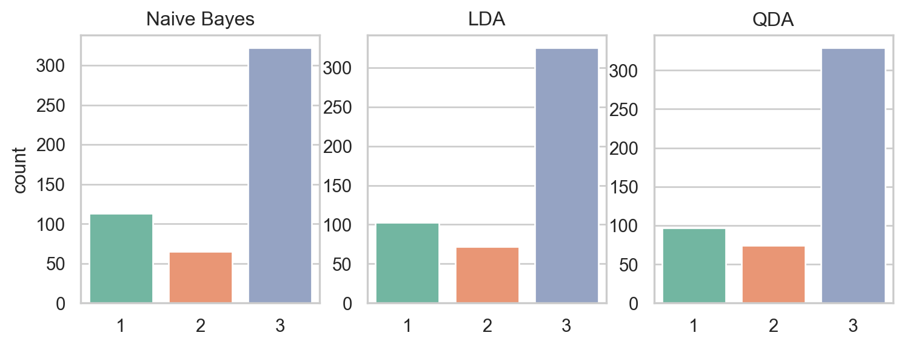
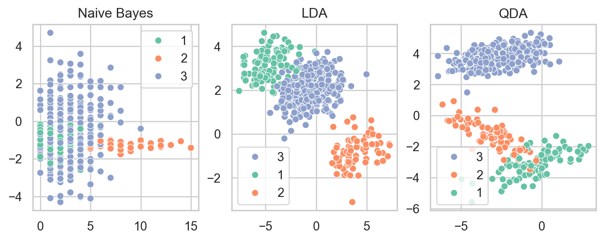
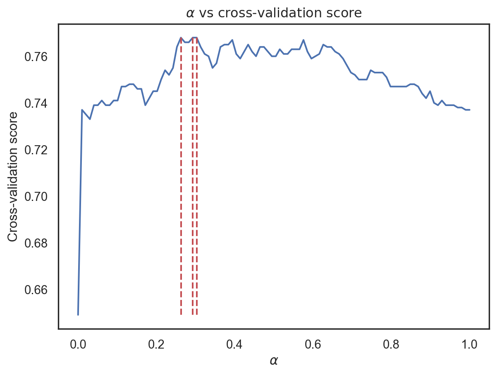

This practical session (TP) aims to familiarize you with the key assumptions of each introduced model. The first section is designed to test your understanding of the data and models, while the second section focuses on applying your knowledge to real-world datasets. Please read the instructions carefully and try to complete the tasks independently. If you get stuck, don’t hesitate to ask for help. Good luck!
Please download the Jupyter Notebook by clicking here. The session will cover the following sections:
Model Assumptions and Data Simulation: It’s important to verify that any models should work well on the data that respect their assumptions.
Data Simulation: Create datasets that either respect or violate the assumptions of each model, including addressing imbalance problems.
Model Implementation: Put the models into action.
Model Evaluation: Report the performance of the models using appropriate metrics.
Real Data Implementation: In real-world problems, things are more complicated because very often the assumptions of the model are often violated. We shall see this by exploring the following real datasets.
Real Datasets: you may start with Spam dataset to reproduce the experimental results shown in the course, or explore Heart Disease Dataset.
Preprocessing/Descriptive Analysis: Understand the features and verify the assumptions (use correlation metrics, for example).
Implementation: Apply the models to the datasets.
Evaluation: Assess the performance of the models.
1. Simulation
Write a function simulateClassificationData(n=200, d=2, M = 2, method = "nbc") that returns input-output observations with
observation size n (\(200\) by default)
input \(x_i\) are of dimension d (\(2\) by default)
the target \(y\) contains M classes taking values in \(\{1,2,\dots,M\}\)
and lastly, method defines the prefered method that is supposed to work well on this dataset. It should be an element of [nbc, LDA, QDA, RDA] (nbc by default).
I set an example below, you can do it differently.
Code
import numpy as npimport pandas as pdfrom sklearn.datasets import make_classificationfrom sklearn.datasets import make_spd_matrixdef simulateClassificationData(n=200, d=2, M=2, method="nbc", class_weights =None):""" Generates a design matrix for classification that works well with Naive Bayes. Parameters: n (int): Number of samples. d (int): Number of features. M (int): Number of classes. method (str): Method name, default is "nbc" (Naive Bayes Classification). class_weights (arr): The proportion of each class. If `None`, the data is balanced. random_state (int): Random seed for repreoducing the result in random simulation. Returns: X (numpy.ndarray): Feature matrix. y (numpy.ndarray): Labels. """# Check if the class weight is given. If it's None, it's a balanced case.if class_weights isNone: class_weights = np.ones(M)/M idx = np.random.multinomial(1, class_weights, size=n) n_class = [np.sum(idx[:,i]) for i inrange(M)]# Generate data that prefers NBC model.if method =="nbc": b = np.random.randint(1,10, 1) x1 = np.random.poisson(b, size=(n_class[0], d//2)) b = np.random.uniform(-2, 2, 2) x2 = np.random.normal(np.min(b), np.abs(np.max(b)), size=(n_class[0], d//2)) X = np.column_stack([x1,x2])for i inrange(1,M): b = np.random.randint(1,10, 1) x1 = np.random.poisson(b, size=(n_class[i], d//2)) b = np.random.uniform(-2,2, 2) x2 = np.random.normal(np.min(b), np.abs(np.max(b)), size=(n_class[i], d//2)) X = np.row_stack([X, np.column_stack([x1, x2])]) y = np.repeat([str(i) for i inrange(1,M+1)], n_class)# Data that prefers LDAelif method =="lda":# generate parameters (means & covariances) mu = np.random.uniform(-5, 5, size=d) sigma0 = make_spd_matrix(n_dim=d)for i inrange(M-1): mu = np.row_stack([mu, np.random.uniform(-5, 5, size=d)])# generate observations X = np.row_stack([np.random.multivariate_normal(mean=mu[i,:], cov=sigma0, size=int(n*class_weights[i])) for i inrange(M)]) y = np.concatenate([np.repeat(str(i), int(n*class_weights[i-1])) for i inrange(1,M+1)])# Data that prefers QDA or RDAelif method in ["qda", "rda"]:# generate parameters (means & covariances) mu = np.random.uniform(-5, 5, size=d) sigma = [make_spd_matrix(n_dim=d)]for i inrange(M-1): mu = np.row_stack([mu, np.random.uniform(-5, 5, size=d)]) sigma.append(make_spd_matrix(n_dim=d))# generate observations X = np.row_stack([np.random.multivariate_normal(mean=mu[i,:], cov=sigma[i], size=int(n*class_weights[i])) for i inrange(M)]) y = np.concatenate([np.repeat(str(i), int(n*class_weights[i-1])) for i inrange(1,M+1)])# If method is other than above, return value error.else:ValueError("method is either 'nbc', 'lda', 'qda' or 'rda'!")# Randomly shuffle the data id_shuffle = np.random.permutation(range(len(y)))return X[id_shuffle,:], y[id_shuffle].astype(object)
1.1. Balanced datasets
A. With \((n,d,M)=(700,2,3)\), generate datasets: (X_nbc,y_nbc), (X_lda,y_lda) and (X_qda,y_qda) where X’s and y’s are different pairs of inputs and theirs corresponding target, using the function defined above with \(3\) different options of method in the list ['nbc', 'lda', 'qda']. An example is given below.
Code
n, d, M =700, 2, 3# Set random seed for our data generationnp.random.seed(42)X_nbc, y_nbc = simulateClassificationData(n, d, M, method="nbc")X_lda, y_lda = simulateClassificationData(n, d, M, method="lda")X_qda, y_qda = simulateClassificationData(n, d, M, method="qda")
Now, it’s your turn…
B. Write the code to visualize the first \(500\) observations from each dataset using scatterplots colored according to the classes of the target y. The remainining \(200\) observations are treated as the testing data. Your result should look similar to the figures below.

C. For now, work with (X_nbc, y_nbc) dataset.
Train NBC, LDA or QDA on of the first \(500\) observations of the . Report the accuracies, precision, recall and F1-scaore of the three models on the remaining \(200\) testing points.
Draw boundary decision with testing data of the three models on (X_nbc, y_nbc) dataset. An example of function for drawing such a boundary is given below.
Now, we work with imbalanced simulated datasets. The goal is to see some problems with imbalanced datasets, and to propose possible solutions we have studied so far.
A. With the same options as in the balanced case but adding an additional option of class_weights = [0.2, 0.15, 0.65].
Code
weights = [0.2, 0.15, 0.65] #[0.2, 0.15, 0.65]np.random.seed(42) X_nbc, y_nbc = simulateClassificationData(n, d, M, method="nbc", class_weights=weights)X_lda, y_lda = simulateClassificationData(n, d, M, method="lda", class_weights=weights)X_qda, y_qda = simulateClassificationData(n, d, M, method="qda", class_weights=weights)
Recreate the countplots and scatterplots for the three simulated datasets as ilustrated below.


Recreate the performance on imbalanced nbc dataset as shown below.
How is this result compared to the balanced case? Does this surprise you?
Your opinion…
B. Do the same (compute these matrices) for the other two imbalanced datasets.
C. In NBC, LDA and QDA, all parameters are directly esimated using data (means, variances…). However in RDA, we can tune the trade-off parameter \(\alpha\) that combine QDA covariance matrices with LDA covariance matrix, i.e.,
We search for an optimal \(\alpha^*\) that yields better or even the best scores (recall, precision and F\(_1\)-score). This can be done using Cross-Validation technique. We follow the following steps.
a. First, let’s fix \(\alpha_0=0.5\), write a python function called deltaRDA(X, y, X_test, alpha = 0.5, lda_cov = None, qda_cov = None, means = None) where
X,y: training input-output data
X_test: an array containing testing inputs \(x\) that we wish to compute \(\delta(x)\).
alpha: regularized strength (be default is \(0.5\)).
lda_cov: common covariance in LDA \(\hat{\Sigma}\). It it’s None, it should be estimated using data (X,y).
qda_cov: list of per-class covariances in QDA \(\hat{\Sigma}_k\). It it’s None, it should be estimated using data.
means: list of per-class means. It should also be estimated if it’s None.
\(^{***}\)This function computes prediction of X_test using RDA at regularized value \(\alpha_0\). Hint: using the implementation on slide 37.
def deltaRDA(X, y, X_test, alpha =0.5, lda_cov =None, qda_cov =None, means =None):# To do
b. Compute confusion matrix and all the performance matrices on the test data using deltaRDA built above.
How do you feel about this performance of RDA compared to the previous results by NBC, LDA and QDA? Remember that we chose \(\alpha_0=0.5\). Now, let’s find the best one.
c. Split your training data into \(K\) folds namely: \(F_1,F_2,\dots,F_K\). Let \(F_{-k}\) be all the training data except for the \(k\)th fold. For any fixed \(\alpha_0\), write a function cvRDA(alpha) that returns the average F\(_1\)-score over each fold \(F_k\) using model built on \(F_{-k}\). One way to do it is shown below.
d. Choose a grid for \(\alpha\), for example, G=np.linspace(0,1,100) which generates uniform grid of \(100\) values on interval \([0,1]\). Now, write python code that search for \(\alpha^*\) on the grid \(G\) with largest cross-validation F\(_1\)-score. Plot the the following graphic of (\(\alpha\), cv error).
* Optimal alpha: [0.263 0.293 0.303]

e. Build RDA model with the observed optimal \(\alpha^*\) using all \(500\) training data. Report performance metrics on the testing data. Conclude.
Code
preds = {alpha: deltaRDA(X=X_train, y=y_train, X_test=X_test, alpha=alpha) for alpha in alpha_opt}recall = {alpha: np.round(recall_score(y_test, y, average="macro"), 3) for alpha, y in preds.items()}precision = {alpha: np.round(precision_score(y_test, y, average="macro"), 3) for alpha, y in preds.items()}f1 = {alpha: np.round(f1_score(y_test, y, average="macro"), 3) for alpha, y in preds.items()}acc = {alpha: np.round(np.mean(y_test == y), 3) for alpha, y in preds.items()}df_acc = pd.DataFrame({"alpha" : list(acc.keys()),"accucary" : list(acc.values())})print("* Accuracy:")print(df_acc)sns.set(style="white")fig, ax = plt.subplots(1, 3, figsize = (9.5, 3))i =0for alpha in alpha_opt: mat = confusion_matrix(y_test, preds[alpha]) ConfusionMatrixDisplay(mat).plot(ax=ax[i], colorbar=False) ax[i].set_title(f"RDA at alpha={np.round(alpha,3)}; score={np.round(f1[alpha], 3)}") i +=1